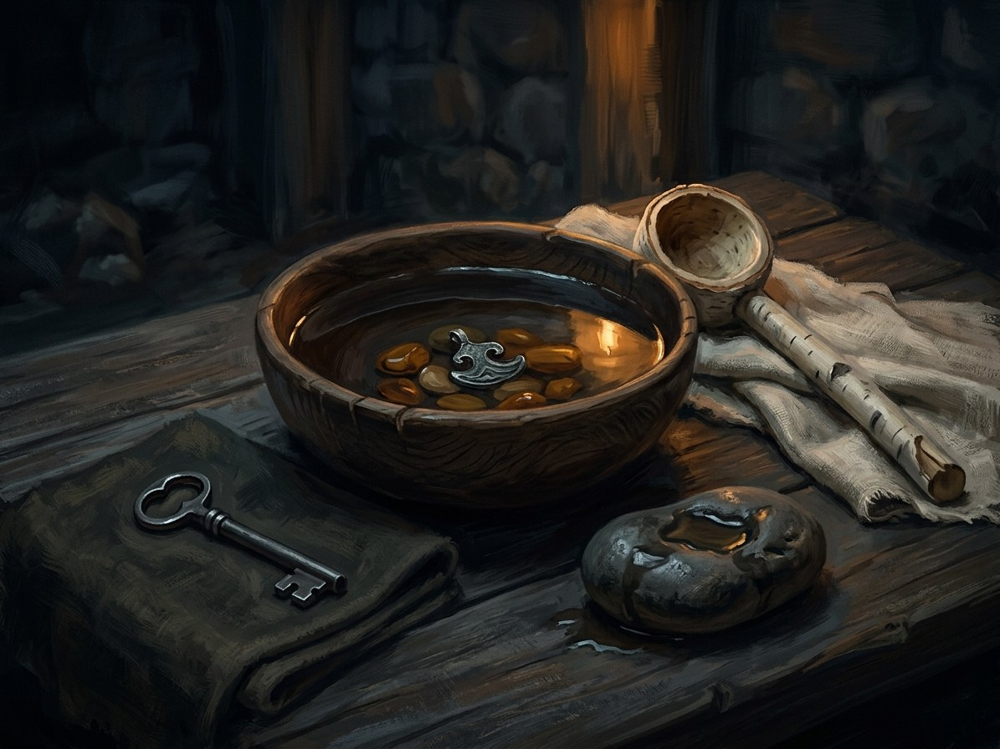

Vanduo (Water)¶
Deity & zenith¶
Deity: Bangpūtys, with Mėnuo setting his tides. Incantation: Vanduo tau teks (“Water for you shall flow”), man for oneself. Medium: running or sea water. Zenith: full moon or high tide, strongest at the spring ice-break: cost halved; doubled away from living water.
Vanduo (Water)

Vanduo (Water) · element¶
Type |
element |
Incantation |
Vanduo tau teks |
Zenith |
Full moon / ice-break |
Note |
Vanduo (Water): the element of life spring, fluid healing, and shared burden. |
Boon¶
Life Spring: healing, and the pull of a soul back from the gate. It can carry a thirst away or draw poison out through hair and blood across distance. It is also the sea-craft of the amber priestesses, scrying in a bowl of water with amber.
Minor / major cost¶
Minor: raging thirst. Major: the caster takes the patient’s wound in part. Book II ch. 27: after Vorskla Vytautas casts Vanduo man teks on a wounded Ruthenian boyar; the thirst vanishes, and “a side that was not his” passes into him, and though he pushes it away, part of the pain stays. Book II ch. 9: a Lagoon witch will draw the poison from the poisoned hostage boys “over any distance”, but her old body cannot carry it, so the poison must go into a younger body: an Order child’s. “Blood for poison; I only say what it costs.” Moving a healing’s cost into another body is a forbidden, costly working: “the debt finds its owner” (Magic rules §4.1); Vytautas refuses it (“Ne”).
Limits¶
It cannot heal a mortal wound (the village woman’s charm and herb poultice can). The White Silence freezes Water workings. Doubled in caves and at distance from living water. At the sea, a Palanga priestess’s wedding ring is refused thrice by the waves (Book I ch. 11).
Uses in the books¶
Birutė’s ring thrown into the Baltic (Book I ch. 11); her full-moon sacrifice (ch. 27, the whole surety paid); the amber bowl at the ice-break “when the cost is lower” (Book VI ch. 10–11). The poisoned boys and the witch (Book II ch. 9); Vytautas’s own working (ch. 27). See the poisoning.
Relations
Countered by: Baltoji Tyla (White Silence)
Deity: Bangpūtys
Patrons: Mėnuo — Tides set Bangpūtys’s zenith.
Used by: Senovės Kalba
- Element
- Water · deity Bangpūtys (attested late), with Mėnuo setting his tides. Zenith: full moon or high tide, strongest at the spring ice-break
- Tier
- Tier 2 (minor, one element) or 3 and up; the sea-craft of the amber priestesses
- Casting
- Vanduo tau teks aloud. Man for oneself
- Components
- Running or sea water; amber for scrying in a bowl; true intent
- Cost
- Minor: raging thirst. Major: the caster takes the patient's wound in part
- Duration
- A candle's length to a night
- Limits
- Cannot heal a mortal wound. Doubled away from living water, in caves and at distance
- Counters
- The White Silence freezes it; consecrated stone; the Order's sword
Life Spring. Healing and the pull of a soul back from the gate. It can carry a thirst away or draw poison out through hair and blood across distance.
The patient's wound. After Vorskla Vytautas casts Vanduo man teks on a wounded boyar: the thirst vanishes, a side that was not his passes into him, and part of the pain stays (Book II ch. 27).
The forbidden transfer. Moving the cost into another body, a second person or a child, is forbidden and costly: the debt finds its owner. In Book II ch. 9 the Lagoon ragana says she could draw the poison from the hostage boys, but her old body cannot carry it, so it would go into an Order child. Vytautas answers no.
The debt returns. A cost shifted into another body finds its owner (Magic rules §4.1).
Connections¶
graph LR
bangputys["Bangpūtys"]
el_water["Vanduo (Water)"]
kalba["Senovės Kalba"]
menuo["Mėnuo"]
white_silence["Baltoji Tyla (White Silence)"]
kalba -->|Uses element| el_water
bangputys -->|Element| el_water
white_silence -->|Counters| el_water
menuo -->|Patron of| el_water
style el_water stroke-width:3px